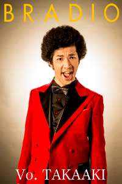

Biography
BRADIO:
Break the Rule And Do Image On
Formed on the concept of bringing color to everyday life, BRADIO is a four piece indie rock band originating from Tokyo, Japan. Their early 2015 single, Flyers was used as the opening theme song for the anime Death Parade. Their first full length album, POWER OF LIFE was released in June of that same year.
-

Takaaki Shingyoji
- Lead Vocals
- Birthday: 24 November
- Blood Type: A
-
Soichi Ohyama
- Guitar, Vocals
- Birthday: 27 July
- Blood Type: O
-
Ryosuke Sakai
- Bass, Vocals
- Birthday: 7 July
- Blood Type: A
-

Yuki Tanabe
- Drums, Vocals
- Birthday: 5 April
- Blood Type: B